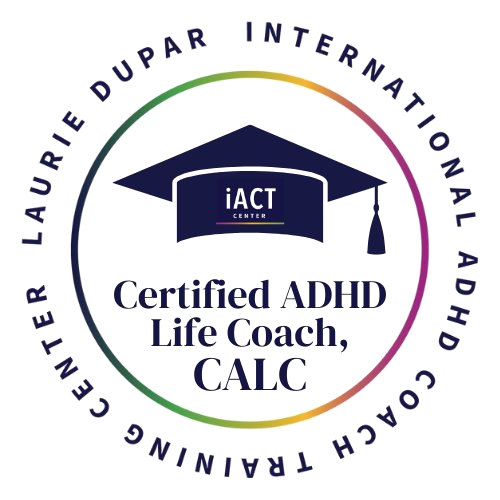

Every student I work with gets a roadmap. A real one, based on where they actually are and where they need to go.
Areas of Focus
For students who are still guessing at words, avoiding reading, or getting by on memorization. We go back to the code and build from there.
Getting ideas onto paper is hard. And spelling is its own skill entirely, one that often gets overlooked. We build both, systematically, from the ground up.
ADHD affects more than focus. Working memory, task initiation, how a student experiences a lesson. Every session is designed with this in mind.
Before we start, I want to know exactly where your child is. A targeted assessment tells us what's working, what's missing, and where to begin.
Why 1:1 matters
Group instruction has its place. But for a child who has been struggling, what shifts things is someone sitting across from them, understanding exactly where they are, and teaching directly to that.
That's what 1:1 makes possible.
The Details
Always one-on-one. No group sessions, no drop-in format.
Standard session length. Enough time to get real work done.
Available anywhere in Canada. Sessions run via Lessonspace.
Questions
If reading or writing feels like a daily battle, at home or at school, that's worth paying attention to. The students I work with often avoid reading, struggle to get ideas on paper, or read laboriously when other things come easily. A free consult is the best first step. We'll talk through what you're seeing and I'll tell you honestly what I think.
Yes. Many of the students I work with have dyslexia, ADHD, or a processing difference, diagnosed or suspected. A formal diagnosis isn't required to get started, and having one doesn't change the fundamentals of how I teach. What matters is understanding how your child's brain works and building the lesson around that.
This is genuinely different for every student. Some families see significant movement within a few months. Others work with me across a full school year or longer. This work doesn't run on a fixed timeline. What I can tell you is that we track progress carefully and you'll always know where your child stands.
Every session follows a consistent structure, which is part of what makes it work for students with ADHD. We warm up with something familiar, work on new or developing skills, and close with something that lets the student feel successful. The materials change. The structure doesn't.
Parents receive two full written progress reports each year, in December and June, plus a summary report in March. I'm also available by email between sessions. I want you to understand what's happening and why.
Start with a free 30-minute consult. We'll figure out together what your child needs.
Book a Free ConsultCertified & affiliated with

Mission & Values
I celebrate diversity and embrace inclusivity in all that I do. I believe that our differences make us stronger, and I'm committed to creating a welcoming space where everyone feels valued, heard, and respected, regardless of race, age, colour, ethnicity, gender identity and expression, sexual orientation, migratory status, disability/abilities, and socioeconomic background. My mission is to serve and support people from all walks of life, one step at a time.
I want to respectfully acknowledge that I live and work on the ancestral, unceded territory of the xʷməθkwəy̓əm (Musqueam), Skwxwú7mesh (Squamish), and Səl̓ílwətaʔ/Selilwitulh (Tsleil-Waututh) Nations.